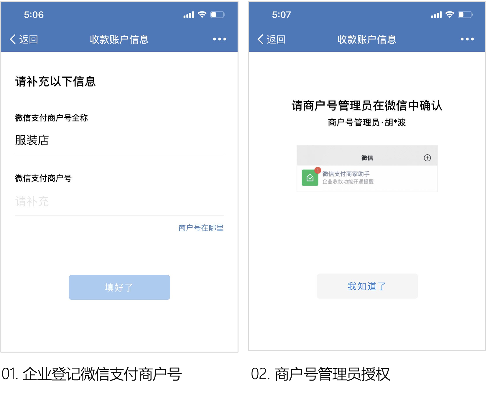
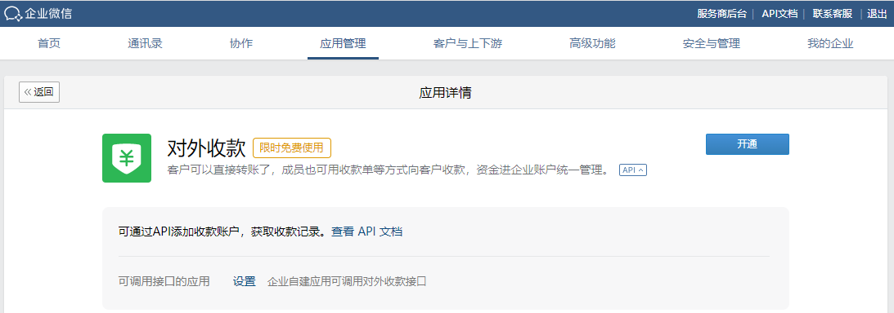

对外收款是企业微信提供的面向微信用户使用的收款方式，可以在聊天中、用收款码、在直播间、使用商品图册等多种方式收款。
开始开发
- 前期准备：使用对外收款之前，需要申请微信支付商户号作为收款账户，如果之前未申请过，可前往申请。
- 如何开通：开通对外收款功能时，需要登记微信支付商户号以及商户号的主体名称，可在手机端和管理后台开通。
手机端开通入口：工作台-对外收款-开通
管理后台开通入口：应用管理-对外收款-启用

配置可调用接口的应用
管理员进入企业微信管理后台后点击“应用管理”-“对外收款”页面，点开“API”小按钮，在“可调用接口的应用”中选择自建应用，配置后该应用才可以调用对外收款的接口。
